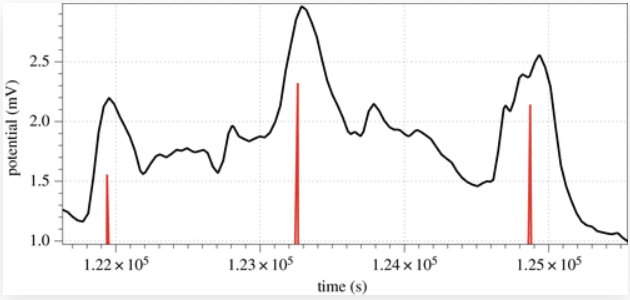
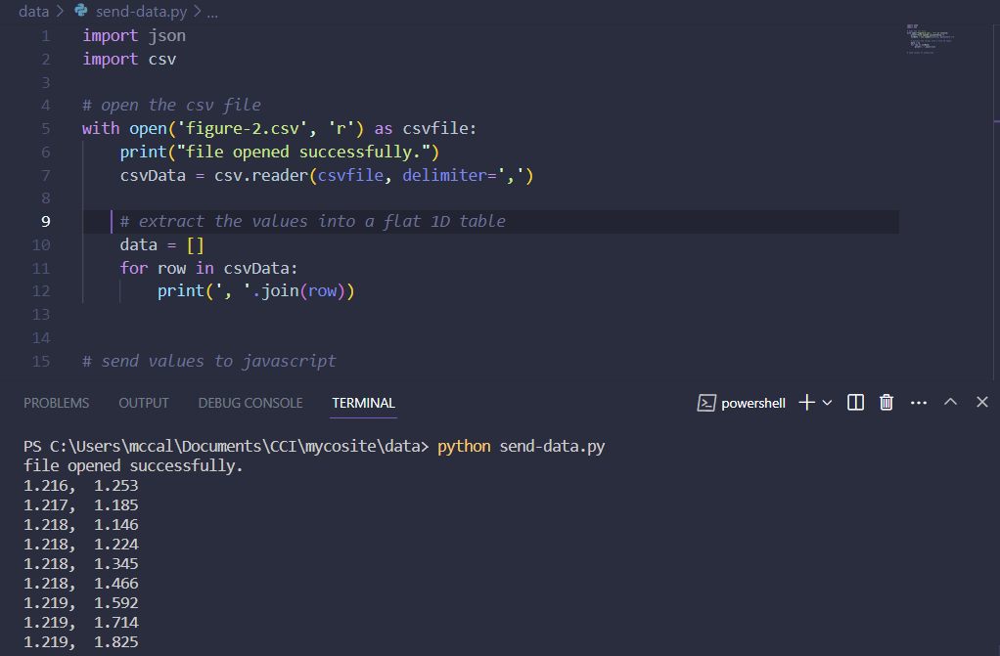

I collected data from the language of fungi study by Andrew Adamatzky (2022). In it there are a series of figures depicting the electrical spikes recorded. I used WebPlotDigitizer as planned and mapped the datapoints, ending up with 121 of them. I then wrote a python script to convert this to a json format and send it to my sketch. I think this overcomplicated things slightly and I could have saved time by copy-pasting, but the code is reusable and may be useful if I gather a larger amount of data.
 This sketch was built on top of the simplified flowfield. I added a function to the particles to change colour, and within the draw loop checked if the data[i] was above a certain amount. If it was, I would trigger the colour change function for particle[i]. Once this was working I tried to play with the aesthetics of the piece by adding a third dimension and a camera. It's very rudimentary but I think I should go further with the 3D aspect, maybe with the three.js library instead of continuing to use p5.js.
In this sketch I played with the paths the particles were taking. If I was able to create curves to visualise the vectors in a smoother way, it could have been visually effective.